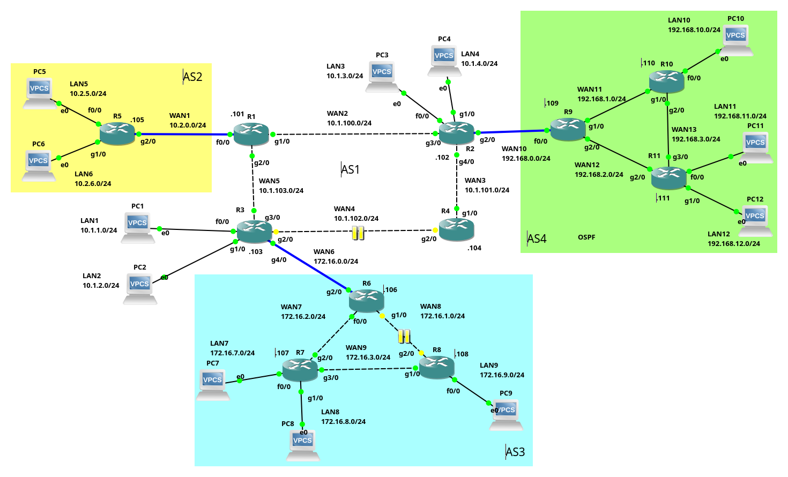

iBGP
O BGP (Border Gateway Protocol), é um protocolo EGP (Exterior Gateway Protocol), ou seja, é um protocolo de roteamento dinâmico utilizado para interligar Sistemas Autônomos (AS) na Internet. No que se trata de Internet, o BGP4, é atualmente o único protocolo EGP utilizado para interconectar as redes da Internet, o que torna o BGP extremamente importante.
A configuração do BGP basicamente se classifica e distingue, de duas formas: eBGP (exterior Gateway Protocol) e iBGP (interior Gateway Protocol). Um eBGP, é utilizado para interligar roteadores de ASs distintos. Já o iBGP, é utilizado para interligar roteadores de um mesmo AS.
Anteriormente foram apresentados dois exemplos de configuração utilizando apenas eBGP, a seguir será apresentado um exemplo de configuração utilizando iBGP.
Exemplo 3 - Configuração iBGP e eBGP
O cenário de rede proposto aqui, é para ilustrar principalmente a configuração de uma rede BGP, com iBGP, mas é claro que para isso, também serão configurados roteadores com eBGP. Devido à isso, este cenário é uma mescla de eBGP com iBGP, além de protocolos IGP (OSPF e RIP) e EGP (BGP). Por isso esse cenário de exemplo é bem mais complexo que os cenários apresentados no Exemplo 1 e 2 apenas com eBGP.
 |
|---|
| Figura 1 - Cenário de rede do Exemplo iBGP |
De forma geral, na rede do exemplo há quatro ASs, sendo esses:
- AS1 - é um AS com quatro redes (LAN1, LAN2, LAN3 e LAN4), essas redes são interligadas por quatro roteadores CISCO (R1, R2, R3 e R4). Tal AS é um transient AS, ou seja, é uma rede que interliga outras redes, ele vai ser o backbone dos demais ASs desse cenário;
- AS2 - é um pequeno AS com apenas duas redes (LAN5 e LAN6), o roteamento entre essas LAN é estático, e o roteador R5, deste cenário, é ligado via eBGP com o R1 do AS1;
- AS3 - é uma rede com três roteadores (R6, R7 e R8), interligados via iBGP. O roteador R6 tem uma ligação eBGP com R3 do AS1. No AS3, há três LANs (LAN7, LAN8 e LAN9);
- AS4 - é uma rede similar ao AS3, todavia o roteamento interno desse AS é feito via IGP, no caso o OSPF. o AS4 tem uma ligação eBGP com R2 no AS1. O AS4 tem as redes LAN 10, 11 e 12.
Resumindo, nesse cenário de rede temos:
- Três ligações eBGP: R5->R1; R6->R3; e R9->R2 - todas as ligações eBGP são representadas na Figura 1, por linhas azuis.
- Duas redes conectadas via iBGP: AS1 e AS3, as ligações iBGP nesses ASs são representadas por linhas tracejadas.
As representações e sinalizações de hosts e redes do cenário - IPs, etc - são feitas de forma semelhante ao que foi explicado nos Exemplos 1 e 2, então na dúvida veja o texto desses exemplos primeiro.
Configuração dos IPs nas interfaces de rede
Como já foi descrito anteriormente, esse cenário de rede é relativamente complexo, então é extremamente importante realizar corretamente o endereçamento de hosts e roteadores do cenário proposto.
Este cenário de teste foi feito no GNS3, e os hosts são VPCS do GNS3 - não será apresentado aqui a configuração de tais hosts.
Também é importante realizar corretamente a configuração do roteamento via OSPF nos roteadores do AS4. A configuração básica de IPs e OSPF dos roteadores podem ser vistas, clicando-se aqui
Não intenção desse material explicar em detalhes as configurações de endereços IP, nem do OSPF. Há outros materiais neste sítio Web explicando como realizar tais configurações! ;-)
Configuração dos pares eBGP
A configuração deste cenário pode iniciar de várias formas, para vamos iniciar com a configuração das conexões eBGP entre os ASs do cenário de rede.
eBGP R5->R1
Vamos iniciar conectando o AS2 ao AS1, isso é feito via eBGP do roteador R5 para o R1, sendo que a configuração do R5, fica da seguinte forma:
R5#configure terminal
Enter configuration commands, one per line. End with CNTL/Z.
R5(config)#router bgp 2
R5(config-router)#neighbor 10.2.0.101 remote-as 1
R5(config-router)#network 10.2.5.0 mask 255.255.255.0
R5(config-router)#network 10.2.6.0 mask 255.255.255.0
R5(config-router)#
Na configuração anterior do R5, informamos que o seu vizinho é o R1 no AS1 (neighbor 10.2.0.101 remote-as 1). E informamos que serão publicadas as redes 10.2.5.0/24 e 10.2.6.0/24 com o comando network.
Já a configuração do R1, fica assim:
R1#configure terminal
Enter configuration commands, one per line. End with CNTL/Z.
R1(config)#router bgp 1
R1(config-router)#neighbor 10.2.0.105 remote-as 2
R1(config-router)#
*May 9 21:47:18.099: %BGP-5-ADJCHANGE: neighbor 10.2.0.105 Up
A configuração do R1, só informa que seu vizinho eBGP é o R5, ele não tem redes para publicar. Note que no final da saída o roteador CISCO já mostra que há adjacência formada com o R2 (BGP-5-ADJCHANGE: neighbor 10.2.0.105 Up).
É possível ver se se R1 e R5 está conectados via BGP, utilizando os seguintes comandos:
R1#show ip bgp summary
BGP router identifier 10.2.0.101, local AS number 1
BGP table version is 3, main routing table version 3
2 network entries using 264 bytes of memory
2 path entries using 104 bytes of memory
2/1 BGP path/bestpath attribute entries using 336 bytes of memory
1 BGP AS-PATH entries using 24 bytes of memory
0 BGP route-map cache entries using 0 bytes of memory
0 BGP filter-list cache entries using 0 bytes of memory
BGP using 728 total bytes of memory
BGP activity 2/0 prefixes, 2/0 paths, scan interval 60 secs
Neighbor V AS MsgRcvd MsgSent TblVer InQ OutQ Up/Down State/PfxRcd
10.2.0.105 4 2 7 6 3 0 0 00:04:35 2
No exemplo da saída do comando show ip bgp summary executado em R1, é possível ver na última linha, que R1 e R2 estão com uma conexão eBGP estabelecida, isso se mostra pela última coluna, que possui um número inteiro positivo (no caso 2, na coluna State/PfxRcd).
Também é interessante ver as rotas para as redes de R5 foram enviadas via BGP para R1, isso pode ser feito com o comando:
R1#show ip bgp
BGP table version is 3, local router ID is 10.2.0.101
Status codes: s suppressed, d damped, h history, * valid, > best, i - internal,
r RIB-failure, S Stale
Origin codes: i - IGP, e - EGP, ? - incomplete
Network Next Hop Metric LocPrf Weight Path
*> 10.2.5.0/24 10.2.0.105 0 0 2 i
*> 10.2.6.0/24 10.2.0.105 0 0 2 i
A saída do comando anterior, mostra que R1 sabe chegar na LAN5 (10.2.5.0/24) e LAN6 (10.2.6.0/24), via R5 (10.2.0.105), passando pelo AS2 (2 i).
Atenção: É recomendável repetir esses comandos em todas as conexões BGP formadas, para ter certeza que tudo está correndo conforme o esperado. Todavia para o texto não ficar muito repetitivo, só vamos repetir esses comandos em momentos oportunos - que sabemos que vão haver problemas! :-p
eBGP R9->R2
Agora vamos configurar o eBGP entre AS4 e AS1, isso deve ser feito nos roteadores da seguinte forma:
- Roteador R9:
R9#configure terminal Enter configuration commands, one per line. End with CNTL/Z. R9(config)#router bgp 4 R9(config-router)#neighbor 192.168.0.102 remote-as 1 R9(config-router)#network 192.168.10.0 mask 255.255.255.0 R9(config-router)#network 192.168.11.0 mask 255.255.255.0 R9(config-router)#network 192.168.12.0 mask 255.255.255.0 R9(config-router)#endNa configuração anterior, em R9 criamos a vinhança de R9 e R2 via eBGP (
neighbor 192.168.0.102 remote-as 1), depois pedimos para que R9 publique as redes LAN10, LAN11 e LAN12 - Roteador R2:
R2#configure terminal Enter configuration commands, one per line. End with CNTL/Z. R2(config)#router bgp 1 R2(config-router)#neighbor 192.168.0.109 remote-as 4 *May 9 22:01:38.383: %BGP-5-ADJCHANGE: neighbor 192.168.0.109 Up R2(config-router)#network 10.1.3.0 mask 255.255.255.0 R2(config-router)#network 10.1.4.0 mask 255.255.255.0Na configuração de R2, criamos a vizinhança entre R2 e R9, depois publicamos as redes LAN3 e LAN3. Para ver se tudo funcionou vamos executar o comando
show ip bgpem R2:
R2#show ip bgp
BGP table version is 6, local router ID is 192.168.0.102
Status codes: s suppressed, d damped, h history, * valid, > best, i - internal,
r RIB-failure, S Stale
Origin codes: i - IGP, e - EGP, ? - incomplete
Network Next Hop Metric LocPrf Weight Path
*> 10.1.3.0/24 0.0.0.0 0 32768 i
*> 10.1.4.0/24 0.0.0.0 0 32768 i
*> 192.168.10.0 192.168.0.109 2 0 4 i
*> 192.168.11.0 192.168.0.109 2 0 4 i
*> 192.168.12.0 192.168.0.109 2 0 4 i
Perceba que todas as redes declaradas em R9 e R2 estão na tabela de roteamento de R2, o que representa sucesso em nossa configuração! Isso significa que os hosts conectados ao R2 podem trocar informações aos hosts conectados ao AS4, então vamos fazer esse teste:
PC4> ping 10.1.3.1 -c 1
84 bytes from 10.1.3.1 icmp_seq=1 ttl=63 time=19.436 ms
PC4> ping 192.168.10.1 -c 1
192.168.10.1 icmp_seq=1 timeout
PC4> ping 192.168.11.1 -c 1
192.168.11.1 icmp_seq=1 timeout
PC4> ping 192.168.12.1 -c 1
192.168.12.1 icmp_seq=1 timeout
Atenção, pela saída do ping executado de PC4 para PC3 (ping 10.1.3.1), tudo está correto (esses fazem parte do mesmo AS no mesmo roteador). Entretanto ao tentar pingar os hosts que estão no AS4 (PC10, PC11 e PC12, veja que não foi possível (por exemplo no PC12 a saída foi: 192.168.12.1 icmp_seq=1 timeout).
O problema relatado anteriormente ocorre, pois somente R9 sabe a rota para as rede conectadas ao R2, os demais roteadores deste AS não sabem (R10 e R11), veja as rotas conhecidas pelo R10:
R10#show ip route
Codes: C - connected, S - static, R - RIP, M - mobile, B - BGP
D - EIGRP, EX - EIGRP external, O - OSPF, IA - OSPF inter area
N1 - OSPF NSSA external type 1, N2 - OSPF NSSA external type 2
E1 - OSPF external type 1, E2 - OSPF external type 2
i - IS-IS, su - IS-IS summary, L1 - IS-IS level-1, L2 - IS-IS level-2
ia - IS-IS inter area, * - candidate default, U - per-user static route
o - ODR, P - periodic downloaded static route
Gateway of last resort is not set
O 192.168.12.0/24 [110/2] via 192.168.3.111, 02:59:18, GigabitEthernet2/0
C 192.168.10.0/24 is directly connected, FastEthernet0/0
O 192.168.11.0/24 [110/2] via 192.168.3.111, 02:59:18, GigabitEthernet2/0
O 192.168.0.0/24 [110/2] via 192.168.1.109, 03:00:41, GigabitEthernet1/0
C 192.168.1.0/24 is directly connected, GigabitEthernet1/0
O 192.168.2.0/24 [110/2] via 192.168.3.111, 02:59:18, GigabitEthernet2/0
[110/2] via 192.168.1.109, 03:00:41, GigabitEthernet1/0
C 192.168.3.0/24 is directly connected, GigabitEthernet2/0
Note na saída anterior, que não há nenhuma rota para as redes LAN3 e LAN3.
Uma possível resolução deste problema é dizer para R9 que seu roteador padrão é R2, e depois publicar via OSPF que o R9 é o roteador padrão do AS4 para os demais roteadores, então neste caso vamos fazer isso em R9:
R9#configure terminal
Enter configuration commands, one per line. End with CNTL/Z.
R9(config)#ip route 0.0.0.0 0.0.0.0 192.168.0.102
R9(config)#router ospf 1
R9(config-router)#default-information originate
Observação: daria para resolve o problema anterior via (i) roteamento estático ou (ii) iBGP, esse último será utilizando no AS3 e o primeiro foi utilizado no AS2.
Feito isso, vamos conferir se a rota padrão foi parar, por exemplo, no R10:
R10#show ip route
...
Gateway of last resort is 192.168.1.109 to network 0.0.0.0
O 192.168.12.0/24 [110/2] via 192.168.3.111, 03:02:52, GigabitEthernet2/0
C 192.168.10.0/24 is directly connected, FastEthernet0/0
O 192.168.11.0/24 [110/2] via 192.168.3.111, 03:02:52, GigabitEthernet2/0
O 192.168.0.0/24 [110/2] via 192.168.1.109, 03:04:15, GigabitEthernet1/0
C 192.168.1.0/24 is directly connected, GigabitEthernet1/0
O 192.168.2.0/24 [110/2] via 192.168.3.111, 03:02:52, GigabitEthernet2/0
[110/2] via 192.168.1.109, 03:04:15, GigabitEthernet1/0
C 192.168.3.0/24 is directly connected, GigabitEthernet2/0
O*E2 0.0.0.0/0 [110/1] via 192.168.1.109, 00:00:21, GigabitEthernet1/0
Note a linha O*E2 0.0.0.0/0 [110/1] via 192.168.1.109... isso indica que agora R10 tem como roteador padrão o R9. Logo vamos voltar ao teste se PC4 acessa os hosts do AS4:
PC4> ping 192.168.10.1 -c 1
84 bytes from 192.168.10.1 icmp_seq=1 ttl=61 time=60.435 ms
PC4> ping 192.168.11.1 -c 1
84 bytes from 192.168.11.1 icmp_seq=1 ttl=61 time=70.490 ms
PC4> ping 192.168.12.1 -c 1
84 bytes from 192.168.12.1 icmp_seq=1 ttl=61 time=51.955 ms
Agora sim, a saída do teste de PC4 para PC10, 11 e 12, mostra que essa parte da rede está totalmente conexa! ;-)
Todavia, ainda não há conexão plena entre o AS2, AS1 e AS4, vamos resolver isso daqui a pouco…
eBGP R6->R3
Neste ponto, iremos conectar as redes de R3 do AS1 R6 no AS3 via eBGP, essa será a última conexão eBGP, vamos lá, com as seguintes configurações em cada roteador CISCO:
- Roteador R3:
R3#configure terminal R3(config)#router bgp 1 R3(config-router)#neighbor 172.16.0.106 remote-as 3 R3(config-router)#network 10.1.1.0 mask 255.255.255.0 R3(config-router)#network 10.1.2.0 mask 255.255.255.0Em R3, configuramos a conexão eBGP entre os vizinhos R3 e R6, e depois publicamos as LANs 1 e 2.
- Roteador R6:
R6(config)#router bgp 3 R6(config-router)#neighbor 172.16.0.103 remote-as 1 R6(config-router)# *May 9 23:17:59.814: %BGP-5-ADJCHANGE: neighbor 172.16.0.103 UpEm R6, só configuramos a vizinhança eBGP com R3 - a saída já mostra que a adjacência entre os vizinhos foi obtida com sucesso.
Realizadas as configurações vamos ver as redes que temos em R6:
R6#show ip bgp
BGP table version is 3, local router ID is 172.16.2.106
Status codes: s suppressed, d damped, h history, * valid, > best, i - internal,
r RIB-failure, S Stale
Origin codes: i - IGP, e - EGP, ? - incomplete
Network Next Hop Metric LocPrf Weight Path
*> 10.1.1.0/24 172.16.0.103 0 0 1 i
*> 10.1.2.0/24 172.16.0.103 0 0 1 i
A saída do comando show ip bgp em R6, mostra que R6 possui rotas para as redes publicadas via BGP de R2, ou seja, a configuração feita via eBGP funcionaram.
TODAVIA, note que não há nenhuma rota para as redes de dentro do próprio AS3. Bem, no AS4, quem estava publicando as redes de dentro do próprio AS era o OSPF, que é um protocolo IGP. Já no AS3, vamos utilizar o iBGP para realizar a mesma tarefa.
Configuração dos pares iBGP
Até aqui só havíamos configurado o BGP via eBGP, mas agora vamos utilizar o iBGP. A primeira coisa a se notar, é que o eBGP é utilizado para conectar roteadores de ASs distintos/diferentes. Já o iBGP é utilizado para conectar roteadores de um mesmo AS.
Assim, o iBGP vai fazer basicamente o mesmo trabalho que fez o OSPF no AS4, mas com uma grande diferença: O OSPF, no AS4, só propagou e informou a respeito de redes que estavam dentro do AS4, mas quando utilizamos o iBGP no AS3, esse pode compartilhar informações a respeito de todas as redes descobertas via BGP. Ou seja, ao configurar o iBGP no AS3, as tabelas de roteamento dos roteadores com iBGP, terão informações a respeito de todas as redes do cenário do exemplo, e é muito importante perceber que isso pode trazer vantagens e desvantagens (por exemplo tabelas de roteamento provavelmente maiores - mais custosas e processar).
Atenção, outro ponto importante a ser notado é que o eBGP usa o campo AS_PATH para evitar loops, assim os roteadores BGP descartam rotas que tenham o próprio AS na lista de caminhos para as rotas recebidas.
Já o iBGP usa uma abordagem diferente, ele utiliza a regra de horizonte dividido (split-horizon - similar ao RIP). Desta forma o iBGP não repassa para outro par iBGP as rotas aprendidas com um roteador iBGP.
Devido a essa peculiaridade do iBGP, em não anunciar rotas aprendidas para outros roteadores iBGP, se faz necessário utilizar uma das três técnicas a seguir:
- Topologia Full Mesh: Nesta é necessário estabelecer uma conexão iBGP com todos os roteadores iBGP da rede em questão. Ou seja se tivermos n roteadores, serão necessárias n.(n-1)/2 conexões iBGP para conectar todos os pares iBGP do AS. Em um exemplo de uma rede com 10 roteadores serão necessárias 45 conexões para fechar uma rede Full Mesh - muito né?
- Route Reflector: um roteador é designado para refletir as rotas aprendidas para os outros roteadores da rede, via iBGP. Esse roteador leva o nome de route reflector, ou seja, ele reflete para os outros roteadores, as redes descobertas. Neste cenário todos os roteadores devem ter apenas uma conexão com o roteador refletor (não precisam de conexões com os demais roteadores do AS via iBGP). Assim, para n roteadores teremos n-1 conexões iBGP, ou seja, em uma rede com 10 roteadores teremos 9 conexões BGP. Entretanto, se o roteador responsável pela reflexão “cair”, a rede inteira pode ficar indisponível - para evitar isso dá para utilizar clusters BGP.
- BGP Confederation: Tal técnica, reduz o número de pares iBGP do AS, dividindo o AS em “subASes” (sub sistemas autônomos) e os agrupando em uma única confederação.
É possível criar uma conexão iBGP sem nenhuma das técnicas citadas anteriormente, é claro que isso pode dar certo ou errado, principalmente em casos de mudanças na rede (falhas, alterações nos links, etc). É importante notar que a resolução dos problemas no BGP fica por conta do administrador de rede, assim esse deve conhecer o protocolo, a rede e tentar prever tudo o que pode acontecer. :-p
Configurando iBGP no AS 3
Podemos iniciar a configuração iBGP, estabelecendo vizinhança entre todos os roteadores do AS3, no caso R6, R7 e R8. Assim, os comandos em R6 seriam:
Não execute esses comandos ainda…
R6#configure terminal
R6(config)#router bgp 3
R6(config-router)#neighbor 172.16.2.107 remote-as 3
R6(config-router)#neighbor 172.16.1.108 remote-as 3
Observe só, dados os comandos anterior, estamos criando vizinhanças iBGP do R6, sendo essas:
- R6->R7;
- R6->R8.
Depois de fazer isso no R6, devemos executar comandos que estabeleçam vizinhança do R7, sendo:
- R7->R6;
- R7->R8.
Bem como do R8:
- R8->R6;
- R8->R7.
Ou seja, para criar uma rede Full Mesh, a formula é (3*(3-1))/2, só que para criar, por exemplo, a vizinhança entre R6->R7 é preciso executar o comando anterior neighbor 172.16.1.108 remote-as 3, em R7. Bem como executar o comando neighbor 172.16.1.106 remote-as 3 em R6 para criar o par, ou seja, o número de comandos é dobrado!
Pior, no exemplo dado anteriormente, criando a vizinhança entre R6->R7, escolhemos utilizar o IP 172.16.1.108, para chegar em R8, e 172.16.1.106 para chegar em R6 (linha amarela na Figura 2), mas e se essa rede 172.16.1.0/24 falhar - o cabo quebrar?
Neste caso, é bem provável que iremos perder a vizinhança/conexão entre R6 e R8. Todavia, perceba que pela configuração de rede do exemplo, ainda haveria uma rota para R6 chegar em R8, que seria passando por R7 (linha vermelha da Figura 2). Então, para que essa falha não ocorra, podemos configurar como vizinhos R6 indo para R8 com o IP 172.16.3.108, e também, R8 indo para R6 por 172.16.2.106. Todavia, se fizemos essa redundância, o número de “vizinhos” vai dobrar e a quantidade de comandos necessário para os pares vai quadruplicar! Sem falar que ainda será necessário roteamento estático ou dinâmico via IGP (OSPF e RIP) para fazer os roteadores conhecerem todas as redes do cenário… :-p
| Figura 2 - Possibilidades de IPs para criar vizinhança do R6-R8 no iBGP do AS3 |
É preciso perceber que na prática, principalmente em roteadores CISCO - mas isso pode acontecer em outros também - quando o link de uma dada placa de rede falha, a placa para de responder por aquele IP - ou seja, é como se a placa fosse desligada e o IP fica indisponível.
Interface de loopback no BGP
Dado o problema citado anteriormente, uma boa prática é configurar um IP roteável em uma interface de loopback. Assim, essa interface virtual vai responder por todas/qualquer interface de rede física do roteador. Desta forma, não precisamos quadruplicar os comandos digitados para estabelecer os vizinhos iBGP - é claro que ainda teremos que colocar essas em rotas para que os roteadores saibam como chegar nesses IPs atrelados às interfaces de loopback.
Dadas as explicações anteriores vamos configurar o iBGP do AS3 utilizando uma rede Full Mesh, interface de loopback e o RIP para propagar as rotas internas e o IP de loopback do AS3:
- Roteador R6:
Para o R6, vamos inciar configurando um IP para a interface de loopback da seguinte forma:
R6(config)#int lo0
R6(config-if)#ip address 172.16.106.106 255.255.255.255
R6(config-if)#exit
Então na configuração anterior, colocamos o IP 172.16.106.106/32 (essa máscara é para identificar um host), na primeira interface de loopback (lo0).
Agora configuraremos o BGP, neste caso o R6 vamos conectar o R6 à R7 (172.16.107.107), e ao R8 (172.16.108.108):
R6(config)#no router bgp 3
R6(config)#router bgp 3
R6(config-router)#neighbor 172.16.107.107 remote-as 3
R6(config-router)#neighbor 172.16.107.107 update-source lo0
R6(config-router)#neighbor 172.16.107.107 next-hop-self
R6(config-router)#neighbor 172.16.108.108 remote-as 3
R6(config-router)#neighbor 172.16.108.108 update-source lo0
R6(config-router)#neighbor 172.15.108.108 next-hop-self
R6(config-router)#network 172.16.7.0 mask 255.255.255.0
R6(config-router)#network 172.16.8.0 mask 255.255.255.0
R6(config-router)#network 172.16.9.0 mask 255.255.255.0
R6(config-router)#exit
Observe que para cada IP, como por exemplo do 172.16.107.107 do R7, temos três linhas de comando, sendo o final dessas:
remote-as 3, que indica o AS do vizinho, como é um iBGP, todos os vizinhos nessa configuração tem o mesmo número (3);update-source lo0, informa que uma interface de loopback pode ser utilizada para criar conexões BGP.next-hop-self, obriga o roteador iBGP repassar como sendo ele mesmo o roteador de próximo saldo de uma rota que ele aprendeu via eBGP, caso esse comando não seja utilizado, o roteador iBGP para como sendo o próximo salto, o roteador pelo qual ele aprendeu a rota, o que pode gerar (normalmente gera), inconsistências, já que muitas vezes o roteador não sabe chegar naquela rota.
Também foram configuradas as redes a serem publicadas via BGP, tal como: network 172.16.7.0 mask 255.255.255.0.
Feitas as configurações anteriores, vamos configurar o RIP, para que esse propague as redes internas do AS3, principalmente os IPs que estamos utilizando nas interfaces de loopback, para que essas sejam conhecidas por todos os roteadores do AS3.
R6(config)#router rip
R6(config-router)#version 2
R6(config-router)#network 172.16.2.0
R6(config-router)#network 172.16.1.0
R6(config-router)#network 172.16.106.106
Lembrando que sem o RIP ou algo similar, os roteadores da rede não conseguiriam estabelecer a conexão BGP, pois não saberiam como se conectar aos roteadores, principalmente por causa do IP de utilizado na interface de loopback.
Neste cenário só a título de ilustração estamos utilizando o RIP, mas poderia ser qualquer outro, como de preferência o OSPF e tal configuração também poderia ser feita via roteamento estático, já que a rede não é muito grande!
Agora vamos basicamente repetir as mesmas configurações em R7 e R8, só alterando os IPs de vizinhos:
- Roteador R7:
R7(config)#interface lo0
R7(config-if)#ip address 172.16.107.107 255.255.255.255
R7(config-if)#exit
R7(config)#router bgp 3
R7(config-router)#neighbor 172.16.106.106 remote-as 3
R7(config-router)#neighbor 172.16.106.106 update-source lo0
R7(config-router)#neighbor 172.16.106.106 next-hop-self
R7(config-router)#neighbor 172.16.108.108 remote-as 3
R7(config-router)#neighbor 172.16.108.108 update-source lo0
R7(config-router)#neighbor 172.16.108.108 next-hop-self
R7(config-router)#exit
R7(config)#router rip
R7(config-router)#version 2
R7(config-router)#network 172.16.2.0
R7(config-router)#network 172.16.3.0
R7(config-router)#network 172.16.107.107
R7(config-router)#exit
- Roteador R8:
R8(config)#interface lo0
R8(config-if)#ip address 172.16.108.108 255.255.255.255
R8(config-if)#exit
R8(config)#router bgp 3
R8(config-router)#neighbor 172.16.106.106 remote-as 3
R8(config-router)#neighbor 172.16.106.106 update-source lo0
R8(config-router)#neighbor 172.16.106.106 next-hop-self
R8(config-router)#neighbor 172.16.107.107 remote-as 3
R8(config-router)#neighbor 172.16.107.107 update-source lo0
R8(config-router)#neighbor 172.16.107.107 next-hop-self
R8(config-router)#exit
R8(config)#router rip
R8(config-router)#version 2
R8(config-router)#network 172.16.1.0
R8(config-router)#network 172.16.3.0
R8(config-router)#network 172.16.108.108
R8(config-router)#exit
R8(config)#end
Feita as devidas configurações em R6, R7 e R8, vejamos se há conexão BGP entre eles, vamos fazer isso em R6:
R6#show ip bgp summary
BGP router identifier 172.16.106.106, local AS number 3
...
Neighbor V AS MsgRcvd MsgSent TblVer InQ OutQ Up/Down State/PfxRcd
172.16.0.103 4 1 1417 1415 58 0 0 00:02:50 2
172.16.107.107 4 3 1363 1383 58 0 0 21:48:32 0
172.16.108.108 4 3 1366 1397 58 0 0 21:43:21 0
Na saída anterior é possível verificar que há uma conexão eBGP entre R6->R3 (172.16.0.103) - isso já funcionava, mas principalmente há conexão estabelecida (números inteiros na última coluna) com os IPs 172.16.107.107 e 172.16.108.108, que são respectivamente os IPs atrelados as interfaces de loopback de R7 e R8. Ou seja, conseguimos estabelecer conexão com os vizinhos iBGP utilizando os IPs criados só para isso.
Agora vamos ver se as rotas estão sendo propagadas corretamente, vamos fazer isso em R8:
R8#show ip bgp
BGP table version is 116, local router ID is 172.16.108.108
Status codes: s suppressed, d damped, h history, * valid, > best, i - internal,
r RIB-failure, S Stale
Origin codes: i - IGP, e - EGP, ? - incomplete
Network Next Hop Metric LocPrf Weight Path
*>i10.1.1.0/24 172.16.106.106 0 100 0 1 i
*>i10.1.2.0/24 172.16.106.106 0 100 0 1 i
r>i172.16.7.0/24 172.16.106.106 1 100 0 i
r>i172.16.8.0/24 172.16.106.106 1 100 0 i
r>i172.16.9.0/24 172.16.106.106 1 100 0 i
Segundo a saída anterior, com toda a configuração feita até agora, é possível acessar LAN1, LAN2, LAN7, LAN8 e LAN9. Sendo que LAN 1 e 2, são rotas fornecidas via eBGP, já LAN7, 8 e 9, são fornecidas via BGP, mas o R8 está utilizando o RIP para alcançar tais redes, essa informação é o r, que está na frente das rotas para LAN 7, 8, e 9. O r significa RIB-failure, que diz que há uma rota com mais prioridade, que não é o BGP.
Se você quiser ver em detalhes execute o comando
show ip routee você verá que a rota para essas redes é fornecida via RIP e não BGP - a rota do BGP está lá, mas ela perde em prioridade para o RIP/IGP, que perde para uma rota estática (caso houvesse alguma).
Vamos realizar um teste do conectividade do PC9 para as redes que são alcançadas até o momento (redes do AS3 e do R3):
PC9> ping 172.16.7.1 -c 1
84 bytes from 172.16.7.1 icmp_seq=1 ttl=62 time=39.488 ms
PC9> ping 172.16.8.1 -c 1
84 bytes from 172.16.8.1 icmp_seq=1 ttl=62 time=33.870 ms
PC9> ping 10.1.1.1 -c 1
84 bytes from 10.1.1.1 icmp_seq=1 ttl=61 time=62.926 ms
PC9> ping 10.1.2.1 -c 1
84 bytes from 10.1.2.1 icmp_seq=1 ttl=61 time=69.650 ms
A saída mostra que todas as redes conectadas no AS3 e no R3, estão acessíveis com as técnicas/configurações que realizamos até agora. Entretanto, o leitor mais crítico, já deve estar a algum tempo se perguntando, quando é que os roteadores do AS1 vão propagar as redes BGP de todos os ASs para todos. Vamos fazer isso na sequência - deixamos para o final, pois o AS1 será o mais complexo do cenário do exemplo.
Configurando iBGP no AS 1
Vamos configurar agora o AS1, que é um backbone, ou seja, ele conecta todas as redes do cenário. Bem, na verdade até agora o AS1 é uma rede bem desconexa, pois a maioria dos roteadores deste AS já sabem a respeito de outros ASs, mas eles não estão trocando informações entre os roteadores do próprio AS a respeito disso, logo a rede do cenário não se conecta por completo.
Para o AS1, vamos utilizar ainda as abordagens:
- IP nas interfaces de loopback, para evitar que alguma interface física “caia” e o cenário fique parcialmente ou totalmente desconexo;
- OSPF para propagar localmente as redes do AS1, bem como os IPs atribuídos nas interfaces de loopback dos roteadores de AS1;
- Route Reflector para trocar informações a respeito de rotas iBGP no AS1.
Assim vamos inciar a configuração pelo R1, que será nosso Route Reflector:
- R1:
R1#configure terminal
R1(config)#interface lo0
R1(config-if)#ip address 10.1.101.101 255.255.255.255
R1(config-if)#exit
R1(config)#router bgp 1
R1(config-router)#neighbor 10.1.102.102 remote-as 1
R1(config-router)#neighbor 10.1.102.102 update-source lo0
R1(config-router)#neighbor 10.1.102.102 route-reflector-client
R1(config-router)#neighbor 10.1.102.102 next-hop-self
R1(config-router)#neighbor 10.1.255.103 remote-as 1
R1(config-router)#neighbor 10.1.255.103 update-source lo0
R1(config-router)#neighbor 10.1.255.103 route-reflector-client
R1(config-router)#neighbor 10.1.255.103 next-hop-self
R1(config-router)#neighbor 10.1.104.104 remote-as 1
R1(config-router)#neighbor 10.1.104.104 update-source lo0
R1(config-router)#neighbor 10.1.104.104 route-reflector-client
R1(config-router)#neighbor 10.1.104.104 next-hop-self
R1(config-router)#network 10.1.1.0 mask 255.255.255.0
R1(config-router)#network 10.1.2.0 mask 255.255.255.0
R1(config-router)#network 10.1.3.0 mask 255.255.255.0
R1(config-router)#network 10.1.4.0 mask 255.255.255.0
R1(config-router)#exit
R1(config)#router ospf 1
R1(config-router)#network 10.1.100.0 0.0.0.255 area 0
R1(config-router)#network 10.1.103.0 0.0.0.255 area 0
R1(config-router)#network 10.1.101.101 0.0.0.0 area 0
R1(config-router)#passive-interface f0/0
R1(config-router)#
Sendo o R1 o roteador escolhido para ser o Route Reflector, sua configuração naturalmente é a mais complexa dentre dos roteadores do AS1. Na saída anterior, configuramos em ordem (blocos)
- A interface de loopback
lo0com o IP 10.1.101.101/32; - o R2 como vizinho, note que aqui foi necessário dizer que estamos utilizando a interface de loopback (
update-source), dizemos que ele é um cliente do Route Reflector (route-reflector-client) e por fim que as rotas repassadas para ele devem ter R1 como roteador de próximo salto; - Idem ao anterior com R3 - atenção note que o IP do R3 na interface de loopback, saiu fora do padrão utilizado, então muita atenção ao copiar esse cenário para informar o IP correto, que é 10.1.255.103;
- Idem ao R2 com o R4.
- Em penúltimo lugar foram configuradas as rede a serem anunciadas via BGP;
- Por fim o OSPF.
Configurado o Route Reflector, vamos configurar os clientes:
- R2:
R2#configure terminal
Enter configuration commands, one per line. End with CNTL/Z.
R2(config)#interface lo0
R2(config-if)#ip address 10.1.102.102 255.255.255.255
R2(config-if)#exit
R2(config)#router bgp 1
R2(config-router)#neighbor 10.1.101.101 remote-as 1
R2(config-router)#neighbor 10.1.101.101 update-source lo0
R2(config-router)#neighbor 10.1.101.101 next-hop-self
R2(config-router)#exit
R2(config)#router ospf 1
R2(config-router)#network 10.1.3.0 0.0.0.255 area 0
R2(config-router)#network 10.1.4.0 0.0.0.255 area 0
R2(config-router)#network 10.1.100.0 0.0.0.255 area 0
R2(config-router)#network 10.1.100.0 0.0.0.255 area 0
R2(config-router)#network 10.1.101.0 0.0.0.255 area 0
R2(config-router)#network 10.1.102.102 0.0.0.0 area 0
R2(config-router)#passive-interface g2/0
R2(config-router)#passive-interface g2/0
R2(config-router)#passive-interface g1/0
R2(config-router)#passive-interface f0/0
- R3:
R3#configure terminal
R3(config)#interface lo0
R3(config-if)#ip address 10.1.255.103 255.255.255.255
R3(config-if)#exit
R3(config)#router bgp 1
R3(config-router)#neighbor 10.1.101.101 remote-as 1
R3(config-router)#neighbor 10.1.101.101 update-source lo0
R3(config-router)#neighbor 10.1.101.101 next-hop-self
R3(config-router)#exit
R3(config)#router ospf 1
R3(config-router)#network 10.1.103.0 0.0.0.255 area 0
R3(config-router)#network 10.1.102.0 0.0.0.255 area 0
R3(config-router)#network 10.1.1.0 0.0.0.255 area 0
R3(config-router)#network 10.1.2.0 0.0.0.255 area 0
R3(config-router)#network 10.1.255.103 0.0.0.0 area 0
R3(config-router)#passive-interface f0/0
R3(config-router)#passive-interface g1/0
R3(config-router)#passive-interface g4/0
- R4:
R4(config)#interface lo0
R4(config-if)#ip address 10.
R4(config-if)#ip address 10.1.104.104 255.255.255.255
R4(config-if)#exit
R4(config)#router bgp 1
R4(config-router)#neighbor 10.1.101.101 remote-as 1
R4(config-router)#neighbor 10.1.101.101 update-source lo0
R4(config-router)#neighbor 10.1.101.101 next-hop-self
R4(config-router)#exit
R4(config)#router ospf 1
R4(config-router)#network 10.1.101.0 0.0.0.255 area 0
R4(config-router)#network 10.1.101.0 0.0.0.255 area 0
R4(config-router)#network 10.1.102.0 0.0.0.255 area 0
R4(config-router)#network 10.1.104.104 0.0.0.0 area 0
As configurações de todos os clientes R2, R3 e R4 são muito similares, só trocando os IPs para se adequarem à cada roteador, a configuração em ordem é: que o roteador em questão é vizinho de R1, que vai utilizar a interface de loopback e configura o OSPF.
Foi executado o comando
passive-interfaceno OSPF para garantir que não há comunicação BGP entre o AS1 e os demais, principalmente o AS4 que também utiliza OSPF.
Após executar corretamente tais comandos em seus respectivos roteadores vamos verificar se há vizinhança entre eles, mais especificamente vamos observar se há vizinhança entre R4 e R1, pois sem o iBGP, loopback e o OSPF configurado corretamente, o R4 não se conectaria de forma alguma ao R1, pois eles não são vizinhos físicos:
R4#show ip bgp summary
BGP router identifier 10.1.104.104, local AS number 1
...
Neighbor V AS MsgRcvd MsgSent TblVer InQ OutQ Up/Down State/PfxRcd
10.1.101.101 4 1 20 15 23 0 0 00:12:59 12
Com a saída anterior, é possível constatar que foi estabelecida a conexão TCP/179, ou seja, BGP entre R4 e R1 (10.1.101.101), e tal conexão está no estado Established (última coluna com o número inteiro positivo). Ou seja, a configuração iBGP, o loopback e o OSPF foram configurados de acordo com o esperado.
Visto isso, vamos verificar a tabela de roteamento do R4:
R4#show ip bgp
BGP table version is 23, local router ID is 10.1.104.104
Status codes: s suppressed, d damped, h history, * valid, > best, i - internal,
r RIB-failure, S Stale
Origin codes: i - IGP, e - EGP, ? - incomplete
Network Next Hop Metric LocPrf Weight Path
r>i10.1.1.0/24 10.1.101.101 2 100 0 i
r>i10.1.2.0/24 10.1.101.101 2 100 0 i
r>i10.1.3.0/24 10.1.101.101 2 100 0 i
r>i10.1.4.0/24 10.1.101.101 2 100 0 i
*>i10.2.5.0/24 10.1.101.101 0 100 0 2 i
*>i10.2.6.0/24 10.1.101.101 0 100 0 2 i
*>i172.16.7.0/24 10.1.255.103 1 100 0 3 i
*>i172.16.8.0/24 10.1.255.103 1 100 0 3 i
*>i172.16.9.0/24 10.1.255.103 1 100 0 3 i
*>i192.168.10.0 10.1.102.102 2 100 0 4 i
*>i192.168.11.0 10.1.102.102 2 100 0 4 i
*>i192.168.12.0 10.1.102.102 2 100 0 4 i
Como pode ser visto na saída anterior, o R4 tem rotas para todas as redes anunciadas via BGP no cenário: LAN 1, 2, 3, 4, 5, 6, 7, 8, 9, 10, 11 e 12. Isso significa que há integração entre todos os ASs do cenário de rede, o que é ótimo! :-D
Vamos verificar se essas rotas também foram propagadas para o R8 do AS3, que é um iBGP deste cenário:
R8#show ip bgp
BGP table version is 123, local router ID is 172.16.108.108
Status codes: s suppressed, d damped, h history, * valid, > best, i - internal,
r RIB-failure, S Stale
Origin codes: i - IGP, e - EGP, ? - incomplete
Network Next Hop Metric LocPrf Weight Path
*>i10.1.1.0/24 172.16.106.106 0 100 0 1 i
*>i10.1.2.0/24 172.16.106.106 0 100 0 1 i
*>i10.1.3.0/24 172.16.106.106 0 100 0 1 i
*>i10.1.4.0/24 172.16.106.106 0 100 0 1 i
*>i10.2.5.0/24 172.16.106.106 0 100 0 1 2 i
*>i10.2.6.0/24 172.16.106.106 0 100 0 1 2 i
r>i172.16.7.0/24 172.16.106.106 1 100 0 i
r>i172.16.8.0/24 172.16.106.106 1 100 0 i
r>i172.16.9.0/24 172.16.106.106 1 100 0 i
*>i192.168.10.0 172.16.106.106 0 100 0 1 4 i
*>i192.168.11.0 172.16.106.106 0 100 0 1 4 i
*>i192.168.12.0 172.16.106.106 0 100 0 1 4 i
Bem o resultado é o mesmo do obtido anteriormente, ou seja, o roteador possui rotas para todas as redes…
Assim, vamos realizar testes de conectividade e redundância para ver o comportamento das configurações BGP.
Teste de conectividade do cenário
Para finalizar o teste vamos, executar o ping do PC9, conectado ao R8 para todos os outros PCs/redes do cenário proposto:
PC9> ping 10.1.1.1 -c 1
84 bytes from 10.1.1.1 icmp_seq=1 ttl=61 time=34.343 ms
PC9> ping 10.1.2.1 -c 1
84 bytes from 10.1.2.1 icmp_seq=1 ttl=61 time=46.063 ms
PC9> ping 10.1.3.1 -c 1
84 bytes from 10.1.3.1 icmp_seq=1 ttl=59 time=72.621 ms
PC9> ping 10.1.4.1 -c 1
84 bytes from 10.1.4.1 icmp_seq=1 ttl=59 time=99.155 ms
PC9> ping 10.2.5.1 -c 1
84 bytes from 10.2.5.1 icmp_seq=1 ttl=59 time=62.595 ms
PC9> ping 10.2.6.1 -c 1
84 bytes from 10.2.6.1 icmp_seq=1 ttl=59 time=65.700 ms
PC9> ping 172.16.7.1 -c 1
84 bytes from 172.16.7.1 icmp_seq=1 ttl=62 time=33.468 ms
PC9> ping 172.16.8.1 -c 1
84 bytes from 172.16.8.1 icmp_seq=1 ttl=62 time=31.527 ms
PC9> ping 192.168.10.1 -c 1
84 bytes from 192.168.10.1 icmp_seq=1 ttl=57 time=97.777 ms
PC9> ping 192.168.11.1 -c 1
84 bytes from 192.168.11.1 icmp_seq=1 ttl=57 time=82.784 ms
PC9> ping 192.168.12.1 -c 1
84 bytes from 192.168.12.1 icmp_seq=1 ttl=57 time=91.569 ms
Assim, as saídas dos “pings” realizados, demonstram também que o cenário está totalmente funcional e conectado.
Teste redundância
Para o teste de redundância vamos verificar primeiro qual é o caminho percorrido para levar pacotes de rede do PC9 do AS3 para o PC10 do AS4:
PC9> trace 192.168.10.1
trace to 192.168.10.1, 8 hops max, press Ctrl+C to stop
1 172.16.9.108 9.759 ms 9.260 ms 9.843 ms
2 172.16.1.106 29.475 ms 29.890 ms 29.384 ms
3 172.16.0.103 40.609 ms 40.308 ms 39.760 ms
4 10.1.102.104 49.619 ms 49.643 ms 49.690 ms
5 10.1.101.102 59.860 ms 60.223 ms 49.514 ms
6 192.168.0.109 69.848 ms 70.064 ms 69.924 ms
7 192.168.1.110 80.264 ms 80.449 ms 79.656 ms
8 *192.168.10.1 100.543 ms (ICMP type:3, code:3, Destination port unreachable)
PC9> ping 192.168.10.1
84 bytes from 192.168.10.1 icmp_seq=1 ttl=57 time=90.143 ms
Para os pacotes saírem no PC9 para o PC10, eles passam pelos seguinte roteadores: R8, R6, R3, R4, R2, R9 e R10. Visto isso vamos desligar as conexões de rede (os links) entre R8-R6 e R3-R4, que são caminhos escolhidos pelo BGP para enviar os pacotes do PC9 para o PC10. Veja como fica o cenário na Figura 3 (veja os links em amarelo com um o sinal de “pause”).
|  |
|---|
| Figura 3 - Teste de redundância |
No teste o R3, demorou quase 2 minutos para trocar a rota para o AS4 do R4 para o R1. Já o R8 demorou mais que 2 minutos para perceber a mudança. Todavia, as redes convergiram para um novo caminho que leve ao destino, veja a nova rota:
PC9> trace 192.168.10.1
trace to 192.168.10.1, 8 hops max, press Ctrl+C to stop
1 172.16.9.108 9.152 ms 9.724 ms 9.226 ms
2 172.16.3.107 19.728 ms 19.474 ms 19.323 ms
3 172.16.2.106 39.356 ms 40.118 ms 39.730 ms
4 172.16.0.103 60.384 ms 59.970 ms 50.196 ms
5 10.1.103.101 80.017 ms 80.280 ms 69.667 ms
6 10.1.100.102 90.016 ms 90.387 ms 89.740 ms
7 192.168.0.109 110.100 ms 110.196 ms 109.826 ms
8 192.168.1.110 129.752 ms 120.027 ms 120.573 ms
PC9> ping 192.168.10.1
84 bytes from 192.168.10.1 icmp_seq=1 ttl=56 time=95.506 ms
Agora a nova rota de PC9 para PC10 é: R8, R7, R6, R3, R1, R2, R9 e R10.
Atenção: é sempre bom realizar testes de redundância em uma rede BGP, pois uma configuração pode funcionar em um cenário de rede, que quando alterado, a rede inteira ou parte dela pode parar de funcionar. Então, após configurar uma rede BGP, tente ligar/desligar todos os possíveis pontos da rede e verificar se ainda há conectividade.
Lembrando que no AS1 há um grande ponto de falha, que é o R1, então caso este roteador pare, a comunicação entre os ASs vão parar também, para que isso não ocorra seria possível alguma abordagem como um roteador backup ou um cluster.
Agregação de rotas
Nosso cenário de exemplo é grande, mas nem se compara com a Internet, mesmo assim note que a tabela de roteamento BGP já ficou relativamente grande, o que pode consumir muito processamento na análise de rotas, bem como memória para armazenar tais rotas, ou mesmo, pode tornar a análise pelos seres humanos mais confusa (ruim de analisar). Para amenizar esse problema é possível agregar as rotas, ou seja, juntar em uma mesma rota, endereços IPs muito similares.
No nosso exemplo de rede, há pelo menos três redes que podemos agregar, que são as redes do AS2, AS3 e AS4. Assim, vamos agregar essas redes para ilustrar a técnica de agregação de rotas, vamos iniciar pelo AS3:
- R6 no AS3:
R6#configure terminal
Enter configuration commands, one per line. End with CNTL/Z.
R6(config)#router bgp 3
R6(config-router)#aggregate-address 172.16.0.0 255.255.0.0 summary-only
O roteador R6, no AS3 é quem publica as rede, então executamos o comando aggregate-address dizendo para ao invés de anunciar as redes 172.16.7.0/24, 172.16.7.0/24 e 172.16.7.0/24, que essas fossem anunciadas como a rede 172.16.0.0/16. Ou seja, a ideia é que os roteadores vão ter agora apenas uma entrada em sua tabela de roteamento, que é para a rede 172.16.0.0/16, e quando alguém quiser alguma sub-rede ou host dessa rede, deve seguir para o AS3, e chegando ao R6. Então, tal roteador consegue encaminhar corretamente os pacotes, por exemplo, os pacotes destinados a 172.16.7.0 deve ir para o R7 e os destinados à 172.16.9.0, devem ir para R8.
Vamos ver como era a tabela BGP do R1 antes e depois da agregação de endereços:
- Tabela roteamento BGP antes:
R1#show ip bgp
BGP table version is 20, local router ID is 10.2.0.101
Network Next Hop Metric LocPrf Weight Path
* i10.1.1.0/24 10.1.255.103 0 100 0 i
*> 10.1.103.103 2 32768 i
* i10.1.2.0/24 10.1.255.103 0 100 0 i
*> 10.1.103.103 2 32768 i
*> 10.1.3.0/24 10.1.100.102 2 32768 i
* i 10.1.102.102 0 100 0 i
*> 10.1.4.0/24 10.1.100.102 2 32768 i
* i 10.1.102.102 0 100 0 i
*> 10.2.5.0/24 10.2.0.105 0 0 2 i
*> 10.2.6.0/24 10.2.0.105 0 0 2 i
*>i172.16.7.0/24 10.1.255.103 1 100 0 3 i
*>i172.16.8.0/24 10.1.255.103 1 100 0 3 i
*>i172.16.9.0/24 10.1.255.103 1 100 0 3 i
*>i192.168.10.0 10.1.102.102 2 100 0 4 i
*>i192.168.11.0 10.1.102.102 2 100 0 4 i
*>i192.168.12.0 10.1.102.102 2 100 0 4 i
- Tabela roteamento BGP depois:
R1#show ip bgp
Network Next Hop Metric LocPrf Weight Path
* i10.1.1.0/24 10.1.255.103 0 100 0 i
*> 10.1.103.103 2 32768 i
* i10.1.2.0/24 10.1.255.103 0 100 0 i
*> 10.1.103.103 2 32768 i
*> 10.1.3.0/24 10.1.100.102 2 32768 i
* i 10.1.102.102 0 100 0 i
*> 10.1.4.0/24 10.1.100.102 2 32768 i
* i 10.1.102.102 0 100 0 i
*> 10.2.5.0/24 10.2.0.105 0 0 2 i
*> 10.2.6.0/24 10.2.0.105 0 0 2 i
*>i172.16.0.0 10.1.255.103 0 100 0 3 i
*>i192.168.10.0 10.1.102.102 2 100 0 4 i
*>i192.168.11.0 10.1.102.102 2 100 0 4 i
*>i192.168.12.0 10.1.102.102 2 100 0 4 i
Comparando as saídas anteriores, é possível notar que agora todas as redes do AS3 se resumem em: 172.16.0.0.
Vamos realizar o mesmo processo no R9 do AS4 e no R5 do AS2:
- R9
R9(config)#router bgp 4
R9(config-router)#aggregate-address 192.168.0.0 255.255.0.0 summary-only
R9(config-router)#
- R5
R5(config-router)#router bgp 2
R5(config-router)#aggregate-address 10.2.0.0 255.255.0.0 summary-only
Feito isso, vamos ver como ficou a tabela de rotas BGP do R1:
R1#show ip bgp
BGP table version is 31, local router ID is 10.2.0.101
Status codes: s suppressed, d damped, h history, * valid, > best, i - internal,
r RIB-failure, S Stale
Origin codes: i - IGP, e - EGP, ? - incomplete
Network Next Hop Metric LocPrf Weight Path
* i10.1.1.0/24 10.1.255.103 0 100 0 i
*> 10.1.103.103 2 32768 i
* i10.1.2.0/24 10.1.255.103 0 100 0 i
*> 10.1.103.103 2 32768 i
*> 10.1.3.0/24 10.1.100.102 2 32768 i
* i 10.1.102.102 0 100 0 i
*> 10.1.4.0/24 10.1.100.102 2 32768 i
* i 10.1.102.102 0 100 0 i
*> 10.2.0.0/16 10.2.0.105 0 0 2 i
*>i172.16.0.0 10.1.255.103 0 100 0 3 i
*>i192.168.0.0/16 10.1.102.102 0 100 0 4 i
Dada a saída anterior, se comparada com a primeira saída do R1 nesta seção, é possível constatar que ficaram menos entradas na tabela BGP. No caso, ficaram apenas entradas para as redes internas (LAN1, LAN 2, LAN3 e LAN4) e agregações que basicamente estão simbolizando tudo o que há dentro de cada AS, ou seja:
- AS2 - 10.2.0.0/16
- AS3 - 172.16.0.0/16
- AS4 - 192.168.0.0/24
Desta forma, nesta rede, deduz-se que tudo que for 192.168. deve ir para o AS4, já se for 172.16. irá para o AS3, e se for 10.2. vai para o AS2.
Tal exemplo, demonstra que o a agregação ajuda a melhorar a leitura e processamento das rotas em redes BGP. Isso ajuda muito no entendimento de redes gigantes como à Internet. É claro que para utilizar a agregação de rotas, é necessário antes de tudo, projetar as redes para que essas permitam a utilização da agregação de rotas.
Conclusão
O BGP é o protocolo de roteamento que interconecta a cocha de retalhos que é a Internet. Todavia ao contrário dos IGPs, o BGP não trata os problemas de forma automática, ou seja, o BGP depende muito do conhecimento do engenheiro de rede que vai configurá-lo, esse deve conhecer bem a fundo as vantagens e desvantagens do BGP e saber utilizar corretamente outras ferramentas que podem auxiliar a configuração do BGP (roteamento estático, IGPs, etc). Também há outros artifícios/ferramentas do próprio BGP que ajudam em sua configuração, mas não é intenção deste material cobrir tudo que há sobre BGP.
Arquivos de configurações dos roteadores do cenário
Todos os arquivos de configurações do cenário estão nos links a seguir: